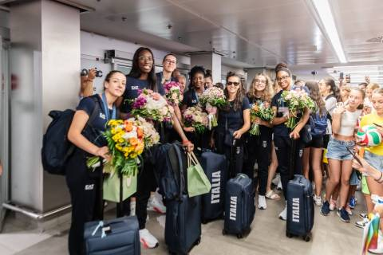
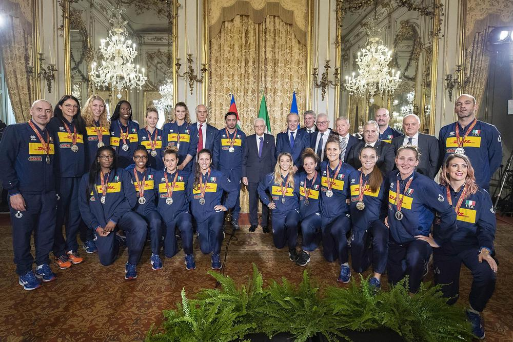
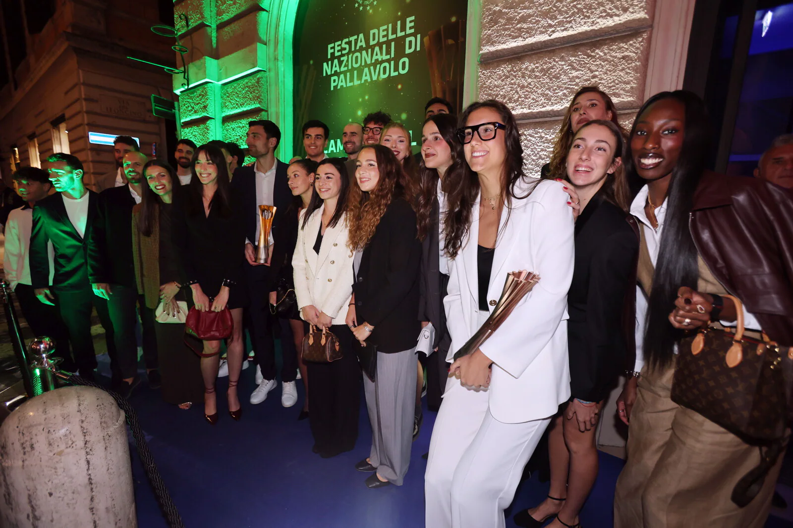
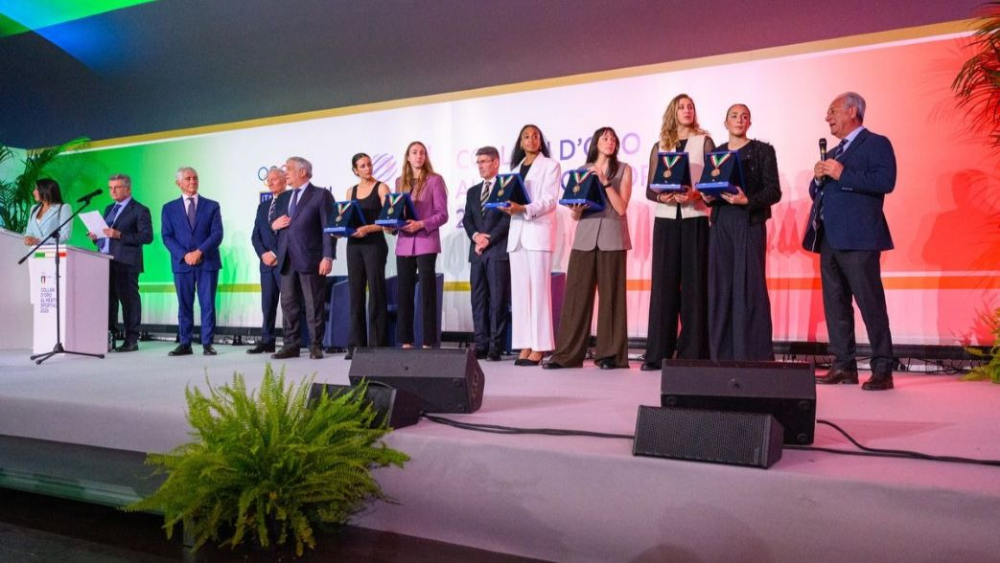
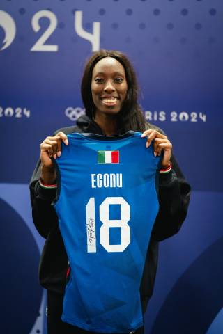

L’importanza dell’oro olimpico
La medaglia d’oro conquistata dall’Italia nella pallavolo femminile a Parigi 2024 non è stata solo una vittoria sportiva. È stata una pagina storica per tutto il movimento della pallavolo italiana.
Per la prima volta una nazionale italiana di volley è riuscita a vincere l’oro olimpico. Questo rende il successo delle Azzurre ancora più importante, perché ha superato un limite che per anni era sembrato difficilissimo da raggiungere. Dopo la finale, la vittoria non è rimasta solo dentro il campo: è diventata un momento di orgoglio nazionale, con feste, riconoscimenti ufficiali e grande attenzione da parte dei tifosi e dei media.
Il ritorno in Italia
Dopo la vittoria olimpica, il ritorno in Italia delle Azzurre è stato accompagnato da grande entusiasmo. La squadra non era più soltanto la nazionale che aveva vinto un torneo: era diventata il simbolo di un risultato storico.
Il successo ha avuto un impatto fortissimo perché molte persone, anche non abituate a seguire la pallavolo, si sono avvicinate alla storia di questa squadra. Le immagini della finale, della premiazione e dei festeggiamenti hanno fatto capire quanto questa medaglia fosse sentita.
Il ritorno in Italia ha trasformato l’oro in un momento collettivo. Le Azzurre sono state celebrate non solo come atlete, ma come esempio di gruppo, lavoro e determinazione.


Il riconoscimento al Quirinale
Uno dei momenti più importanti dopo il ritorno è stato l’incontro al Quirinale durante la cerimonia di restituzione della Bandiera. Essere ricevute in una sede istituzionale così importante ha dato alla vittoria un valore ancora più grande.
Questo riconoscimento ha mostrato che l’oro olimpico non era solo un risultato sportivo, ma anche un motivo di orgoglio per l’Italia. Le Azzurre hanno rappresentato il Paese con una vittoria costruita attraverso impegno, disciplina e spirito di squadra.
La presenza delle atlete in una cerimonia ufficiale ha dato visibilità alla pallavolo femminile e ha rafforzato il messaggio che lo sport femminile può essere protagonista al massimo livello.
La festa con il mondo della pallavolo
Dopo il momento istituzionale, la medaglia d’oro è stata celebrata anche a Roma insieme al mondo della pallavolo italiana. È stato un momento importante perché ha unito la Nazionale, la Federazione e tante persone legate a questo sport.
Questa festa ha avuto un significato speciale: l’oro non apparteneva soltanto alle giocatrici in campo, ma anche a tutto il movimento che negli anni ha lavorato per far crescere la pallavolo femminile.
Le Azzurre sono diventate un punto di riferimento per tante ragazze che giocano a pallavolo o che sognano di arrivare un giorno in Nazionale.


Cosa hanno ricevuto dopo la vittoria
La prima cosa ricevuta dalle Azzurre è stata naturalmente la medaglia d’oro olimpica, il riconoscimento più importante per un’atleta. A questo si sono aggiunti premi personali, riconoscimenti ufficiali e grande affetto da parte del pubblico.
Le giocatrici medagliate hanno avuto anche il premio economico previsto dal CONI per gli atleti italiani vincitori dell’oro olimpico e alcune protagoniste hanno ricevuto anche premi individuali legati al torneo: Paola Egonu è stata nominata MVP e miglior opposto, mentre Orro, Sylla, Danesi e De Gennaro sono state inserite tra le migliori nei rispettivi ruoli. Per Parigi 2024 il premio era di 180.000 euro lordi per ciascun oro.
Il ricordo al Museo Olimpico
Un altro riconoscimento molto simbolico riguarda il Museo Olimpico del CIO a Losanna. Il pallone della finale vinta contro gli Stati Uniti, firmato da tutte le Azzurre, e la maglia firmata da Paola Egonu sono stati destinati a essere conservati nel museo.
Questo fatto è importante perché trasforma la vittoria in memoria storica. Non si tratta più solo di un risultato da ricordare, ma di un oggetto concreto che racconta una pagina dello sport italiano.
La presenza di questi simboli nel Museo Olimpico mostra quanto quella finale sia stata considerata significativa anche a livello internazionale.

Riconoscimenti ricevuti
| Riconoscimento | Significato |
|---|---|
| Medaglia d’oro olimpica | Primo oro olimpico nella storia della pallavolo italiana. |
| Premio CONI | Premio economico previsto per gli atleti italiani medagliati d’oro. |
| Quirinale | Riconoscimento istituzionale durante la cerimonia di restituzione della Bandiera. |
| Festa a Roma | Celebrazione con il mondo della pallavolo italiana. |
| Museo Olimpico del CIO | Pallone della finale e maglia di Egonu conservati come simboli storici. |
| Premi personali | Egonu MVP, Orro, Sylla, Danesi e De Gennaro premiate nei rispettivi ruoli. |